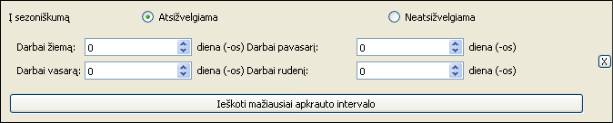

Šia sąsaja galima:
- Rasti intervalus, kuomet pasirinkti padaliniai/sistemos yra apkrauti mažiausiai
- Pasirinkti, ar ieškomo intervalo ilgis priklauso nuo sezoniškumo
Kokių vienetų (padalinių ar sistemų) mažiausios apkrovos intervalai yra skaičiuojami priklauso nuo to, koks rėžimas yra pasirinktas rėžimo sąsajoje.
Mažiausios apkrovos intervalų paieška turi du režimus:
-
Kai ieškomo intervalo ilgis priklauso nuo sezoniškumo. Tokiu atveju ieškomo intervalo ilgis
kinta atitinkamai nuo metų laikų (laikoma, kad žiemai priklauso gruodis, sausis, vasaris; pavasariui -
kovas, balandis, gegužė; ir t.t.).
Šį rėžimą galima naudoti tuomet, kai pvz. ieškoma, kuomet galima atlikti padalinio patalpų remontą ir kai žiemą remontas trunka ilgiau negu vasarą. -
Kai ieškomo intervalo ilgis yra pastovus. Tuomet laikoma, kad intervalo ilgis visais
metų laikais išlieka pastovus.
Šį režimą galima naudoti tuomet, kai pvz. ieškomas yra tinkamiausias intervalas IS atnaujinimui.
Pasirinkus, kad ieškomo intervalo ilgis priklauso nuo sezoniškumo, reikia įvesti intervalo ilgį visais keturiais metų laikais:
Pasirinkus, kad ieškomo intervalo ilgis nepriklauso nuo sezoniškumo, užtenka įvesti tik norimo intervalo ilgį:

Paspaudus mygtuką Ieškoti mažiausiai apkrauto intervalo sistema suras visų pažymėtų padalinių/IS intervalus ir juos pateiks apkrovų ir prognozių kortelėje, paryškinant rastą intervalą geltona spalva bei užrašant jo skaitinę reikšmę po kiekvieno elemento antrašte.